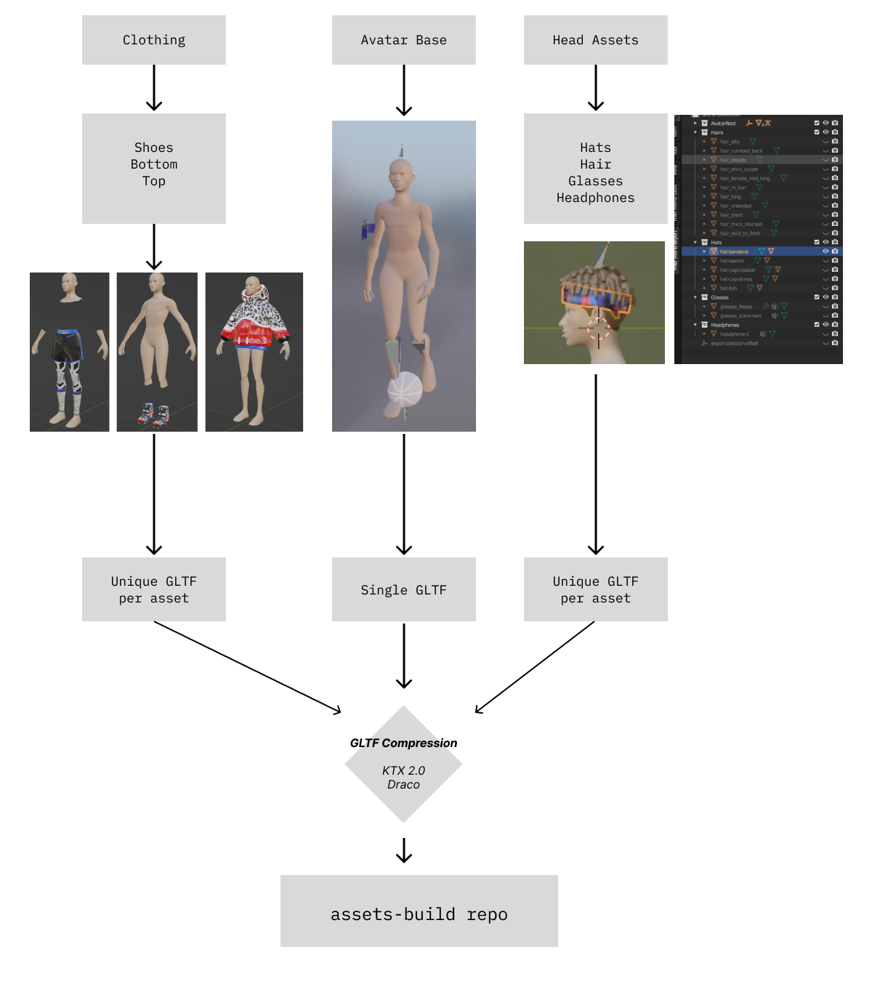
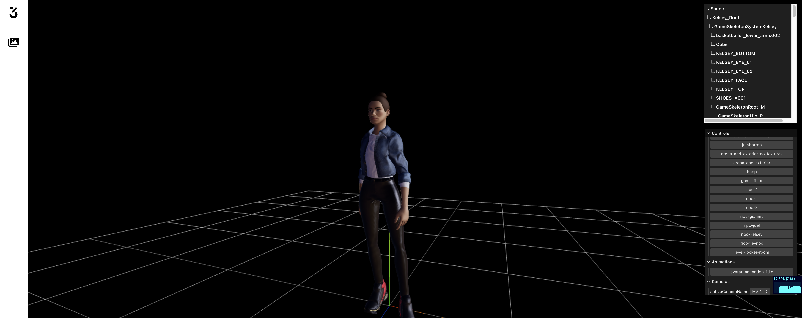
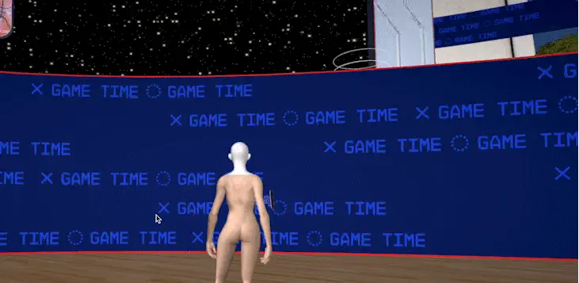
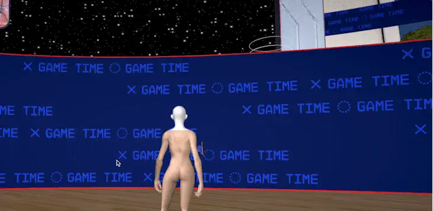

🏀 Google Pixel Arena
Google and the NBA collaborated with Media.Monks & Jam3 to craft an innovative sports entertainment venture: a multiplayer 3D universe seamlessly integrated into the official NBA app.
Pixel Arena empowers fans to customize their avatars using futuristic streetwear, revisit iconic NBA highlights, and engage in battle royale mini-games against fellow enthusiasts, all while vying for the chance to secure exclusive merchandise.
My role was to lead the asset pipeline, basically I had to sit down with 3d artists and define together the appropriate characteristics for the asset that would work well visually and technically; more specifically I was involved in the following of areas:
Avatar Asset Pipeline - Making sure content was delivered within certain specs from different teams and finally creating scripts to compress all content using Draco and KTX
Arena Pipeline and Shaders - Defined the material for the main arena.
Motion Capture - Defining a pipeline from the delivery of motion capture data

Avatar Asset Pipeline
One of the unique aspects of Pixel Arena for a Webgl project is the sheer amount of content; we had over 100 variation of assets that had to work seamlessly with any combination in the avatar body. Shoes, hair and other things like glasses and headphones, as well as custom facial features using blendshapes.
The core component of the pipeline relied on the GLTF file format, known for its simplicity and widespread compatibility across various DCC software. Given that different teams utilized distinct software (such as Cinema4D and Maya for the avatar team, and 3ds Max and Unity for the city and arena team), GLTF served as the crucial link facilitating seamless communication between these diverse platforms.
We could also leverage tools like gltf-transform to help us compressing images to the KTX format ( A format that stays compressed on the GPU ) and Draco compression for meshes. This enabled us to

I created an internal tool to preview the gltf files in the webgl context where they were going to be used, this helped the artists to make sure that their assets looked good and were ready for delivery; it also helped us evaluate compression settings down the stream.

Arena Pipeline & Shaders
The arena followed a similar process from the avatar, we would receive the GLTF from the vendor and would save it in blender file to normalize and cleanup any data.
Because the arena was so big we started running into issues with the texture resolution; A solve for this was to export the arena texture with a single RGB texture and I created a shader that masks those values into their appropriate material properties
I also worked on some general custom shader materials in the arena, like this moving led billboard animating UV’s
 

Motion Capture
One of the features of the Pixel Arena was to showcase iconic player shots using your avatar. To accomplish this, we formed a partnership with a vendor specializing in motion capture, utilizing video footage as a basis. My responsibility involved defining a 3D scene template to the vendor, enabling them to align the motion capture scenes seamlessly within the Arena’s coordinate space.
I also helped with the webgl specifically in reusing the avatar to accommodate multiple animations derived from a different skeleton. This task posed some intricacies within Three.js, necessitating a fair amount of prototyping and validation to resolve.
Once the motion capture file was ready I would import it into Blender, made sure everything worked in our internal GLTF asset review tool and deploy it to the main application codebase.

Project Team:
GOOGLE CREATIVE DIRECTORS
- J.P Guiseppi
- Franc Cheetham
JAM3 CREATIVE DIRECTOR
- Adam Romano
DESIGN
- Andrea Mata
- Xiaocha Zhang
- Barbara Lopez
- Victoire Douy
MOTION DIRECTOR
- Branko Jass
MOTION/3D
- Cyrill Durigon
- Andrea Arice
- Kousha Motamedi
- Ivo Diependaal
- Mauri Vio
- Chris Chan
TECHNICAL DIRECTORS
- William Chan
- Kin Hui-Lo
DEVELOPMENT
- Amelie Rosser
- Henrique Périgo
- Johnathan McKinnell
- Alejandro Mesa Suarez
- Artem Leznikov
- Edgard Zavarezzi
PRODUCTION
- Mark Evans
- Patrick Raimondi
- Celane Chan
- Florinda Dilag